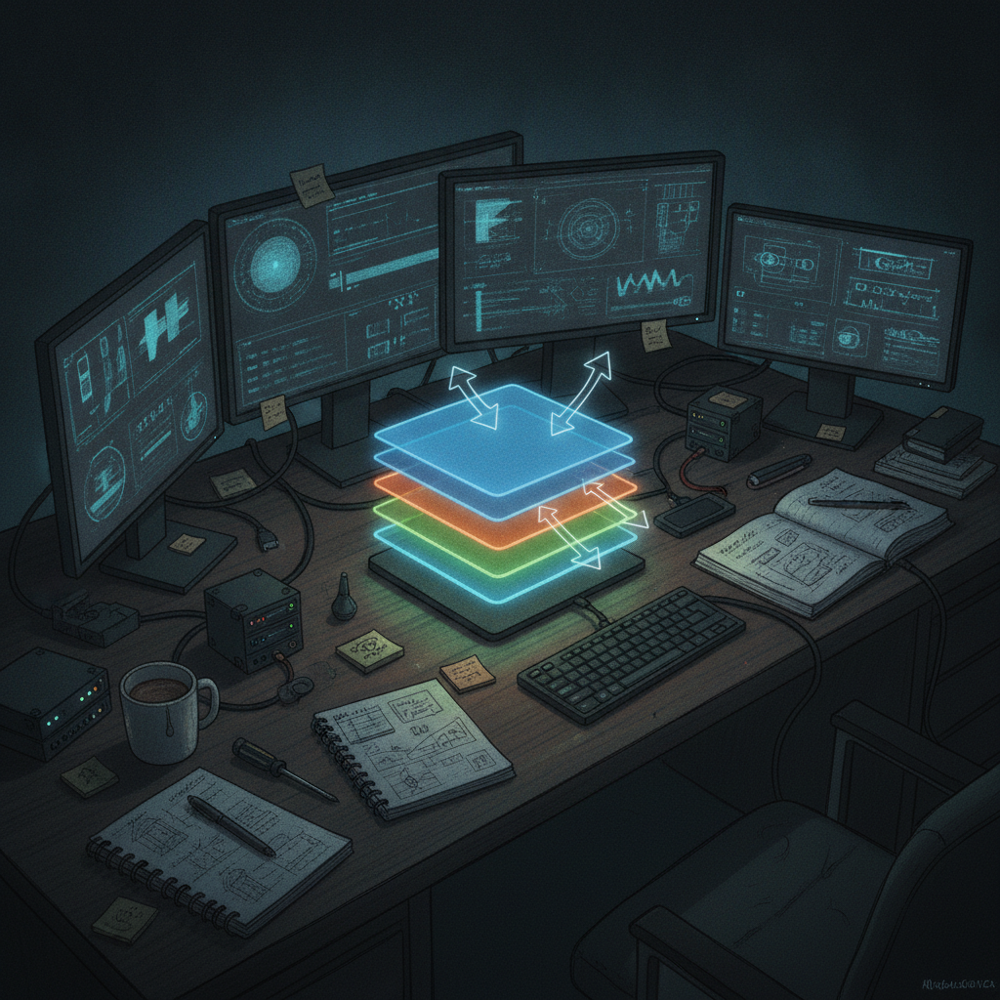

FlipThisFoundry Update: Layers Just Got Faster and Easier to Navigate
FlipThisFoundry is Rick's ongoing project for NFT creation and drawing tools, built in the open on GitHub. It's aimed at giving artists and creators a smoother path from idea to finished piece, and the last 24 hours brought a focused improvement to how layers work inside the tool.
What just shipped
The update centers on layers, one of the core building blocks of any drawing tool. Creating a new layer is now instant, no waiting, no friction between wanting a fresh layer and having one. Alongside that, navigation between layers has been cleaned up, so it's clearer which layer you're on and easier to move between them without losing your place.

Why it matters
If you've ever worked in a drawing or design tool with clunky layer management, you know how much it slows down the actual creative work. Every second spent hunting for the right layer or waiting on the app to catch up is a second not spent drawing. Making layer creation instant and navigation clearer sounds small, but it's the kind of foundational fix that makes everything built on top of it feel better, faster sketching, faster iteration, less mental overhead for anyone using FlipThisFoundry to put NFT art together.
Rick's take
I like working on the unglamorous stuff like this because it's the part people actually feel even if they never think about it directly. Nobody opens a drawing tool hoping to admire the layer panel, but if it's slow or confusing, it colors the whole experience. Getting layer creation to feel instant and making navigation clearer is exactly the kind of groundwork I want under FlipThisFoundry before piling more features on top. It's a small update, but it's the right one for right now.
What's next
With layers feeling more solid, the natural next step is building more of the creation and drawing experience on top of that stronger foundation. I'll keep sharing updates here as they land.